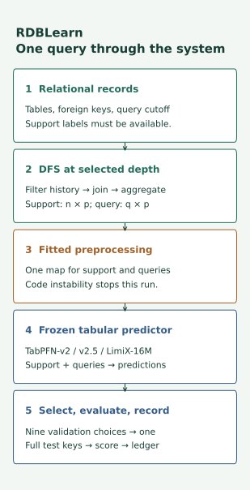
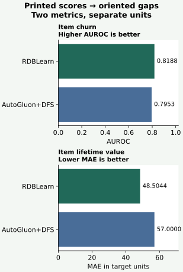

YEAR 5 · LESSON 194 · ANALYSIS & REPORT
Explain what the evidence can support¶
Your tangible win: write a reproduction report that distinguishes a result, a possible explanation, and the experiment needed to test that explanation. This closes the reporting step of lessons 192–194; the model reproduction itself remains incomplete.
Mission connection. A persuasive case for relational learning needs explanations a skeptic could test. A polished report that hides missing results weakens that case. Today's skill is deciding which sentence the evidence permits.
2 · Trace the model before explaining it¶
RDBLearn builds features by following relationships between database rows, then passes those features to a pretrained tabular predictor. Support means the labeled examples supplied at prediction time. A query is a row whose label must be predicted. A cutoff is the time beyond which information is unavailable for that prediction. DFS, deep feature synthesis, composes aggregations along relationship paths. The backend uses support examples without updating its pretrained weights. Primary reading: RDBLearn v1, §3 and §5.


Follow one customer query: select records permitted by its cutoff; summarize linked transactions; encode support and query with the same fitted map; supply both to the frozen predictor; score its prediction. Depth selects how far feature construction follows relationships. Validation chooses depth and backend; the test split evaluates that choice. This is the intended pipeline, not a certification that all temporal checks have passed.
Worked example — recorded source diagnostic. Fit categories b,c,d as 0,1,2. In the recorded environment, adding query category a expands and sorts the class list, shifting the known codes to 1,2,3. Stored support still has the earlier meaning. Numeric controls remain unchanged. This identifies a representation consistency failure. It does not tell us whether any benchmark query triggers it or how a predictor's score changes. Recorded observations.
Held fixed: known categories, fitted support and numeric controls. Varied: the unseen query category. Measured: codes, not predictions. L194 authenticates and replays this saved diagnostic; it does not rerun the upstream preprocessor.
3 · A difference is a question, not its explanation¶
In plain terms. First ask which score is better. Then ask what else changed between the two systems. These are different questions.
Comparator fixed before analysis: AutoGluon+DFS, the supervised pipeline with relational feature synthesis, in all 21 rows of Tables 1–3. This comparison asks how two complete pipelines rank in the published table. It does not isolate the value of adding relational structure: both already use it. The paper describes its comparison families in §5.
AUROC measures how well a binary predictor ranks positives above negatives; larger is better. MAE, mean absolute error, averages absolute prediction errors in the target's units; smaller is better. Define an oriented gap so positive always favors RDBLearn:
- AUROC gap = RDBLearn score − comparator score.
- MAE gap = comparator error − RDBLearn error.
Worked examples from the printed table. Item churn: .8188 − .7953 = +.0235 AUROC. Item lifetime value: 57.0000 − 48.5044 = +8.4956 target units of MAE reduction. The signs have the same interpretation; the magnitudes have different units. Neither supplies a causal explanation.


def oriented_gap(metric, model, comparator):
"""Positive means model better; missing results stay missing."""
if metric not in {'AUROC', 'MAE'}:
raise ValueError('Unknown metric')
for value in (model, comparator):
if value is not None:
if isinstance(value, bool) or not isinstance(value, (int, float)) or not math.isfinite(value):
raise ValueError('Scores must be finite numbers or null')
if value < 0 or (metric == 'AUROC' and value > 1):
raise ValueError('Score outside metric domain')
if model is None or comparator is None:
return None
return model - comparator if metric == 'AUROC' else comparator - model
A missing result returns None (an explicit absence), not zero. A zero gap means equal displayed scores; it is not evidence of equivalence. Rounded scalars cannot recover seed variability, paired prediction errors, or a significance test. Three tasks from one database are not three independent databases.
4 · The complete report, including what did not run¶
The target remains the RDBLearn v1 column across all 21 tasks, with the released source pinned to commit b5b03ebf8091547285a6e06cba53d2d1a40cb171, release 0.1.2 and FastDFS 0.2.1. Per task, course seeds 0,1,2 each search depths 2,3,4 × TabPFNv2/TabPFNv2.5/LimiX-16M, official splits, and a 10,000-example support cap. These seeds extend repeatability; they are not recovered historical seeds. See the inherited protocol.
That is 21 × 3 × 9 = 567 validation candidates and 21 × 3 = 63 selected tests. The source admission failure stopped all 630 model evaluations. The downstream model executor has not been implemented or validated. The full raw-data, feature availability, checkpoint and regression-normalization audits also remain unfinished. No new inference is authorized in this lesson.
| Task | Metric | Published RDBLearn | Published AutoGluon+DFS | Oriented gap | Fresh result |
|---|---|---|---|---|---|
| relbench/rel-amazon/item-churn | AUROC | 0.8188 | 0.7953 | +0.0235 | NOT_RUN |
| relbench/rel-amazon/user-churn | AUROC | 0.6823 | 0.6666 | +0.0157 | NOT_RUN |
| relbench/rel-avito/user-clicks | AUROC | 0.6709 | 0.6191 | +0.0518 | NOT_RUN |
| relbench/rel-avito/user-visits | AUROC | 0.6569 | 0.6064 | +0.0505 | NOT_RUN |
| relbench/rel-hm/user-churn | AUROC | 0.6802 | 0.6802 | +0.0000 | NOT_RUN |
| relbench/rel-stack/user-badge | AUROC | 0.8430 | 0.8470 | -0.0040 | NOT_RUN |
| relbench/rel-stack/user-engagement | AUROC | 0.8935 | 0.8928 | +0.0007 | NOT_RUN |
| relbench/rel-trial/study-outcome | AUROC | 0.7167 | 0.6740 | +0.0427 | NOT_RUN |
| relbench/rel-amazon/item-ltv | MAE | 48.5044 | 57.0000 | +8.4956 | NOT_RUN |
| relbench/rel-amazon/user-ltv | MAE | 14.5290 | 16.2047 | +1.6757 | NOT_RUN |
| relbench/rel-avito/ad-ctr | MAE | 0.0341 | 0.0460 | +0.0119 | NOT_RUN |
| relbench/rel-event/user-attendance | MAE | 0.2393 | 0.2590 | +0.0197 | NOT_RUN |
| relbench/rel-hm/item-sales | MAE | 0.0630 | 0.0678 | +0.0048 | NOT_RUN |
| relbench/rel-stack/post-votes | MAE | 0.0676 | 0.0709 | +0.0033 | NOT_RUN |
| relbench/rel-trial/site-success | MAE | 0.4179 | 0.4396 | +0.0217 | NOT_RUN |
| relbench/rel-trial/study-adverse | MAE | 44.5186 | 43.6232 | -0.8954 | NOT_RUN |
| 4dbinfer/amazon/churn | AUROC | 0.7777 | 0.7291 | +0.0486 | NOT_RUN |
| 4dbinfer/outbrain/ctr-100k | AUROC | 0.5499 | 0.5494 | +0.0005 | NOT_RUN |
| 4dbinfer/retailrocket/cvr | AUROC | 0.8609 | 0.7343 | +0.1266 | NOT_RUN |
| 4dbinfer/stackexchange/post-upvote | AUROC | 0.8736 | 0.8849 | -0.0113 | NOT_RUN |
| 4dbinfer/stackexchange/user-churn | AUROC | 0.8774 | 0.8396 | +0.0378 | NOT_RUN |
Published reference signs: 17 favorable, 3 unfavorable, 1 equal at printed precision. These are descriptive signs from rounded published values. Every fresh mean and sample standard deviation (variation across required seeds) stays blank. The complete report includes all task rows, limitations and continuation requirements; the JSON report is generated by the same visible functions used in the notebook.
Scope check. Do not average AUROC with MAE, or raw MAEs measured in different target units. Regression normalization requires a verified reference error per task; those denominators remain NOT_ESTABLISHED. Missing benchmark results establish neither that the model wins nor that it loses.
5 · Turn each explanation into a test¶
A mechanistic explanation names an operation that could change the result. An intervention deliberately changes a specified input or operation. A confounder is another varying factor that could explain the observed difference. We can write testable plans now; executing them needs valid model results and a separately approved protocol.
| Suspected reason | Vary or stratify | Hold fixed | Measure and limit |
|---|---|---|---|
| Label coverage | Nested support sizes using only labels available by each cutoff | Query set, checkpoint, features, depth, preprocessing and paired seeds | Per-task score changes. Tests context sensitivity, not pretraining scale. |
| Schema information | Remove one specified relationship path | Support, queries, checkpoint, remaining paths and preprocessing policy | Paired change after the feature intervention. Tests that path in this pipeline, not arbitrary schema transfer. |
| Cold start | Prespecify entities seen/unseen in allowed support history | Same fitted predictor, cutoff policy and scorer | Sizes, label counts and separate scores. An observational subgroup gap may reflect degree, time or label differences. |
Worked hypothesis. “Sparse support hurts” predicts improvement when support grows while queries and the predictor stay fixed. Use nested samples so the smaller support is contained in the larger set. Freeze the comparison before viewing test results. If the predicted improvement does not appear, the result challenges this hypothesis for the tested conditions. If it appears, it still does not explain all 21 tasks.
Cold-start caution. An entity unseen in labeled support can still have historical neighbors. State which kind of novelty you mean. AUROC is undefined for a subgroup containing only one class; keep its label counts and do not invent a score. These plans are course analysis proposals, not experiments reported by the paper or completed here.
Predict before changing the evidence selector: what additional claim does a source counterexample permit compared with a missing benchmark result?
6 · Build, challenge, defend¶
Student notebook · executed solution · readable lab · field guide.
Implement oriented_gap, evidence_license and summarize_comparisons. Each function feeds the full 21-task report. Then delete a task, insert a nonfinite score, or try an unsupported evidence type: the checks must refuse the claim. The portable notebook embeds its evidence and uses only Python's standard library for replay; no account, download or model is needed.
Your report has six parts: question and frozen protocol; complete per-task results; uncertainty; diagnostic and competing explanations; limitations; the next decisive experiment. Write an abstract that says the source diagnostic is informative while benchmark attribution is unestablished. Explain why the 17 favorable published signs do not complete the Year 5 reproduction exit.
Execution budget: $0 new cloud/API spend, 1,800 aggregate local execution seconds including failed attempts and delivery checks. Reproduction contract and commands. A repaired pipeline needs a separately named protocol, data and checkpoint audits, a validated runner and a complete-grid cost forecast; silently reducing tasks, seeds or candidates would change the target.
The report is prepared; your written defense remains PENDING_WRITTEN_DEFENSE. Ask me about any unclear step, or send your abstract for feedback. Lesson 195 stress-tests the thesis using the strongest available evidence. Author checks, learner mastery, full reproduction, live Colab and deployment are separate claims.